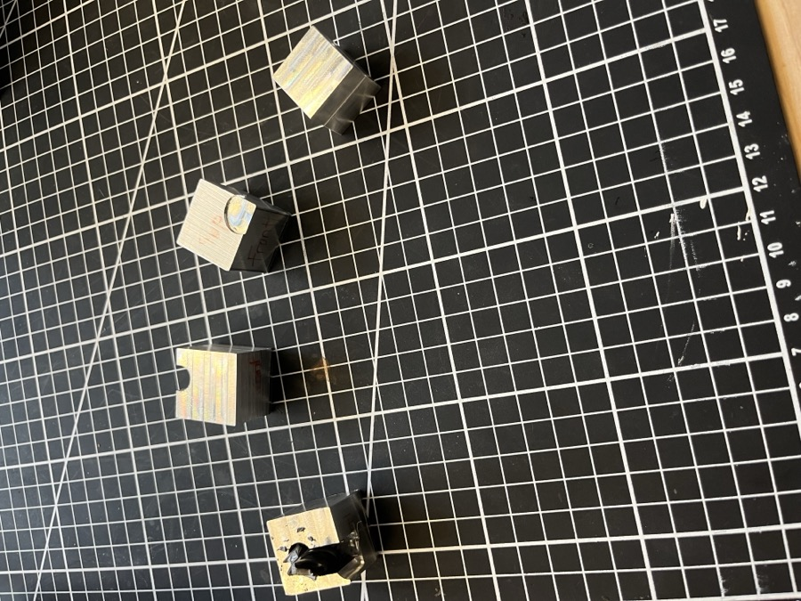
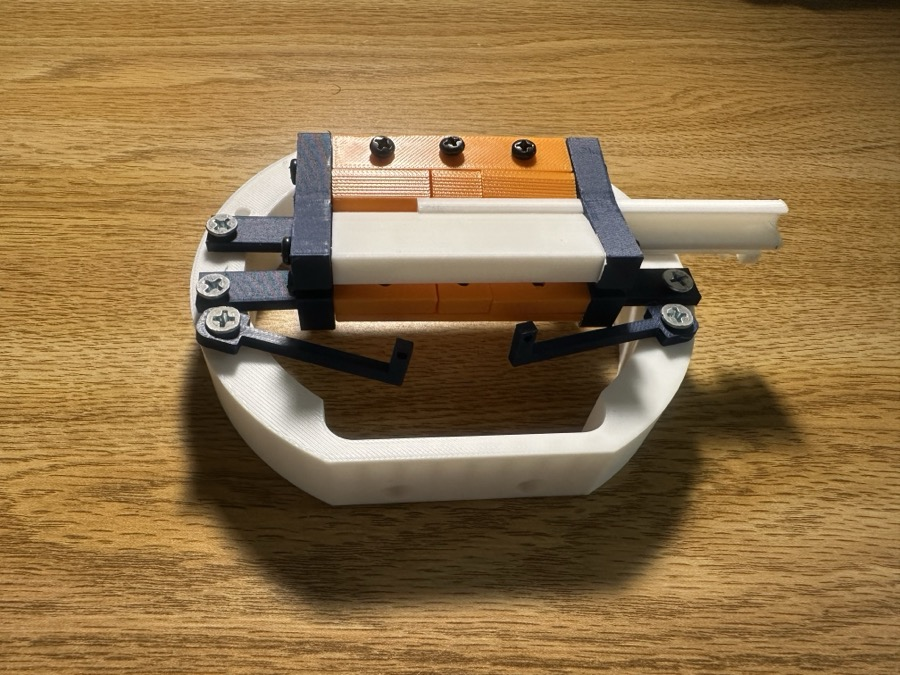
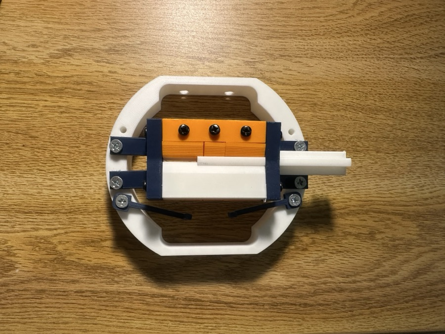
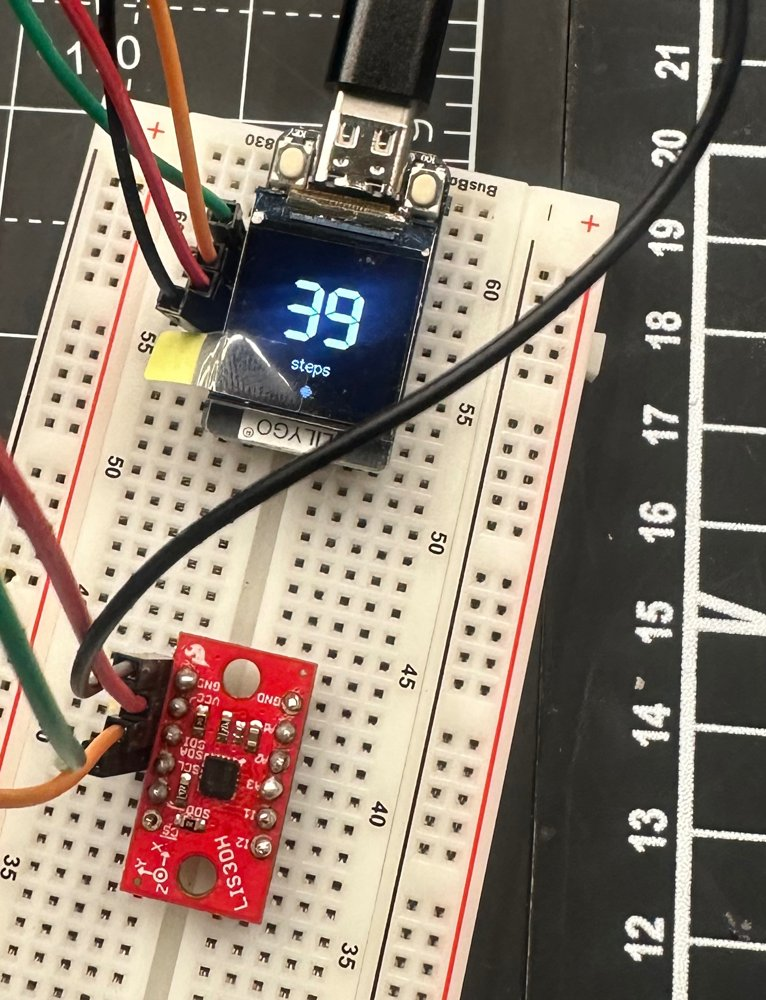
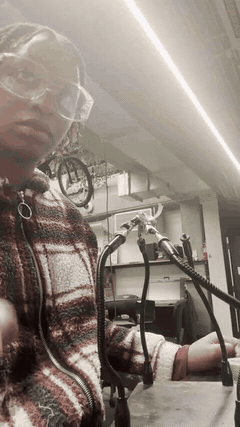
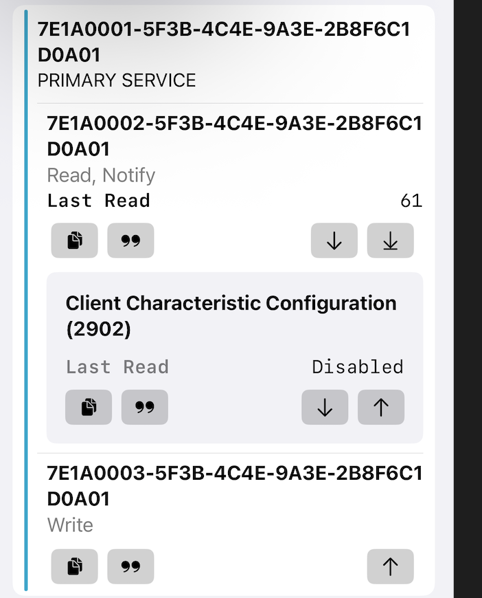
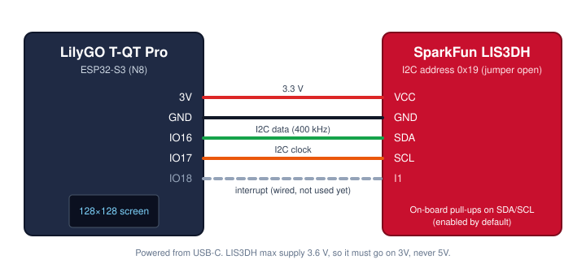
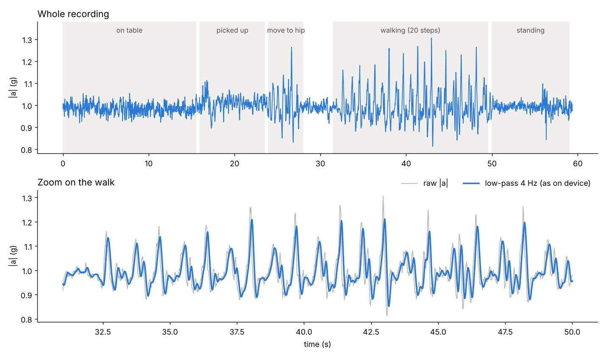

I build systems at the hardware level — from a discrete-logic 8-bit computer to ESP32-based sensor systems — and I'm headed toward graduate study in Electrical Engineering. Comfortable with an oscilloscope, a multimeter, and a soldering iron, and I like debugging problems that live in silicon, not just in code.
Over the summer, I worked as a Research Assistant in Middlebury's Physics Department, helping my professor redesign a Linear Paul Ion Trap from the ground up so it would fit within the tight volumetric constraints of his Piezo vacuum chamber. I built the CAD assemblies in Autodesk Fusion 360, working through tolerance analysis and precise component integration to turn his physics-based trapping requirements into mechanical blueprints I could actually manufacture from.
Manufacturing meant learning the CNC mill from the ground up — multi-axis setup, tapping metal, and machining aluminum stock to validate the toolpaths before committing to the final copper fabrication. Watching a design I'd modeled on a screen turn into a real, machined part sitting in my hands was the part of this project that hooked me.



Middlebury's first-ever inverted pendulum robot: a 5-meter beam spanning the gap between two central steel columns, carrying a rail-mounted cart and pendulum. The pendulum starts hanging down. An operator swings it up with a joystick, and once it comes within about 11° of upright the controller takes over, balances it, and holds the cart near the center of the rail.
As Robotics Systems Integration Lead, I programmed the embedded software that drives the system, writing defensive, safety-conscious code that guards against H-bridge short-circuits and other hardware failure modes. Our joystick controller came without any documentation, so I reverse-engineered it myself — reading its raw signal outputs and writing custom control code to map its inputs to the DC motors driving the cart.
Getting the pendulum to balance in real time meant getting the control theory right first. I designed and simulated several control topologies in MATLAB, applying PID and LQR theory. On the electrical side, I authored the circuit designs in KiCad and presented them to the rest of the team, keeping component integration and power distribution clean as more people built on top of the design.
The controller runs on a Raspberry Pi Pico in a 1 kHz loop, reading two quadrature encoders (cart position and pendulum angle) and computing the motor force from a four-state LQR gain. I wrote the joystick mode: button-driven switching between idle, manual swing-up and balancing, with an automatic hand-off to LQR near upright.
Our first balance lasted 70 seconds. The runs that followed taught us more than the successes did. Our limit switch triggered false crash stops, so we switched to detecting crashes from the pendulum angle. The MATLAB gains were asking for more force than our motor could produce, so the PWM saturated and the cart jittered. Smoothing the velocity estimate with an exponential moving average and retuning the gains took us from 70 seconds to a 33-minute continuous balance. Fully automatic swing-up is the next milestone.
As part of my Industrial Design coursework, I designed and implemented an 8-bit computer at the hardware level, constructing each subsystem from discrete integrated circuits. The project began with the design of a computer clock and progressed through the development and integration of the core architectural components up to the EEPROM.
I implemented key components of the computer, including the Arithmetic Logic Unit (ALU), program counter, registers, latches, RAM, and EEPROM. The ALU was built using TTL logic, incorporating integrated circuits such as the 74LS86 XOR gate and the 74LS83 4-bit adder to perform arithmetic operations including addition and subtraction. Through this process, I developed a strong understanding of how combinational and sequential logic interact to enable computation.
Over the course of the semester, I dedicated approximately six hours per week to circuit design, assembly, testing, and debugging alongside a partner. Each subsystem was constructed, validated independently, and then integrated into the larger system, reinforcing concepts such as data flow, clock synchronization, and state management. This hands-on approach provided a concrete understanding of how low-level hardware components collectively form a functioning computer.
In addition to circuit implementation, I developed technical proficiency in drafting and interpreting schematics, translating logical designs into physical hardware, and systematically troubleshooting electronic systems. This project served as my first rigorous exposure to electronics and computer architecture and played a pivotal role in shaping my interest in pursuing Electrical Engineering.
The goal of this project, created with teammates from my Embedded Systems class, was to extend a driver's situational awareness by monitoring areas beyond their natural line of sight. We designed a sensor-based system capable of detecting vehicles in visually obstructed regions and communicating this information to approaching drivers through a clear visual alert, similar to a traffic-light signal.
Our final product is a motion-sensored traffic guidance system. Each unit consists of an ESP32, a microwave motion sensor, and an LED ring. The system operates in pairs, with one unit facing oncoming traffic and the other facing the reference driver.
When a vehicle approaches one unit, it signals the paired unit to display a red light, warning oncoming traffic of an approaching vehicle through a narrow passage. The system is intended for high-risk areas such as sharp curves and single-lane bridges where visibility is limited.
One limitation of the system is that microwave sensors respond to all motion, including non-traffic movement or weather conditions, which may lead to false positives. As a result, the system is intended to supplement — not replace — existing traffic signage.
This project served as a proof of concept for a low-cost warning system on roads where a full traffic signal isn't practical.
A step counter I built from a bare accelerometer and a tiny ESP32-S3 board (LilyGO T-QT Pro with a SparkFun LIS3DH). It reads the sensor over I2C, detects steps with an algorithm I tuned on my own recorded walking data, shows today's count on the board's 0.85" screen, keeps the count through power loss, and publishes it over Bluetooth Low Energy.
My friends and I compete on Stompers, a step-ranking app, and steps I took without my phone in my pocket never counted. So I built my own counter that I can wear without the phone.



I didn't use a sensor library. I wrote the register reads and writes myself from the LIS3DH datasheet: 50 Hz, ±4 g, 12-bit, with the loop paced by the sensor's data-ready flag so every sample lands exactly 20 ms apart. I use the magnitude √(x² + y² + z²), so the count doesn't depend on how the device is tilted or clipped on.

Before writing any step logic, I recorded myself taking exactly 20 steps. Each step is a sharp spike to about 1.1–1.2 g, but picking the board up and moving it to my hip made spikes just as tall, at uneven intervals. Every detection rule comes from something visible in that data: a 4 Hz Butterworth low-pass filter, hysteresis, a 0.3–2.0 s step gap, and a rhythm check that only starts counting after 4 evenly spaced steps.

I measured what each rule contributes by replaying the recording through a Python port of the firmware logic:
| Rules applied | Count (true: 20) |
|---|---|
| Threshold only | 26 |
| + 0.3 s minimum gap | 25 |
| + 4 steps in a row | 25 |
| + steady rhythm | 20 |
A fixed threshold missed softer steps, so v2 adapts: it tracks the resting baseline and a running typical step height, and arms at 40% of the typical step. On the same walk scaled to 40% strength, v1 counted 4 steps and v2 counted 19. The count is saved to flash (at most every 30 s, to limit wear), and a custom GATT service exposes total steps (read and notify) and a clock the phone sets, since the board has no real-time clock.
The 20/20 result is on the recording I tuned it on, so held-out validation (hip, pocket, bag, and non-walking activity) is next, along with writing steps to Apple Health and cutting power draw.